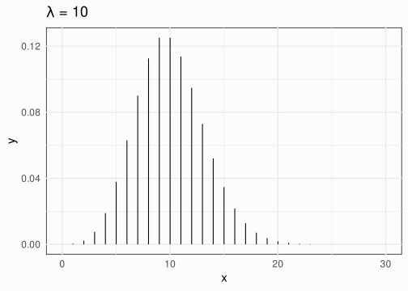
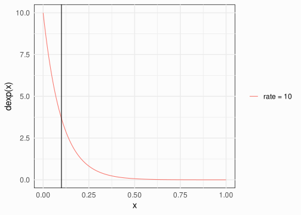
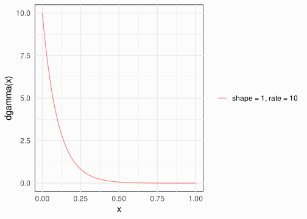
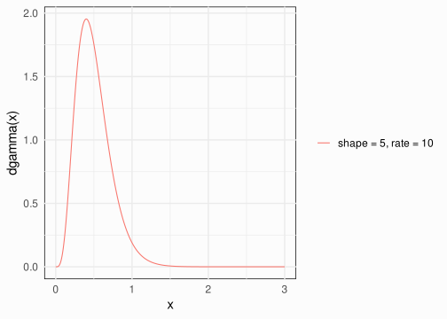
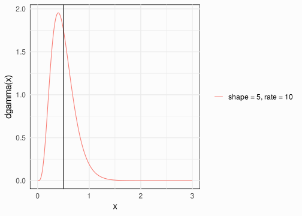
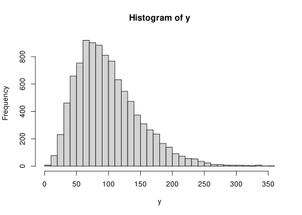
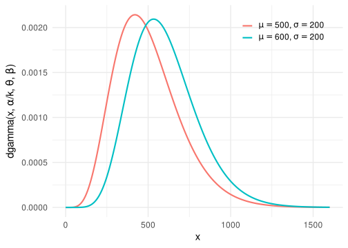

gamma_params <- function(shape = NULL, scale = 1/rate, rate = 1,
mean = NULL, sd = NULL,
eqs = FALSE){
if(eqs){
cat(rep("=", 25), "\n")
cat(eqs()$gamma, "\n")
cat(rep("=", 25), "\n")
}else{
if(is.null(shape)){
var <- sd^2
shape <- mean^2 / var
scale <- mean / shape
rate <- 1/scale
} else if(is.null(mean) & is.null(sd)){
if(is.null(rate)){
scale <- 1/rate
} else{
rate <- 1/scale
}
mean <- shape * scale
var <- shape * scale^2
sd <- sqrt(var)
}else{
stop("when shape and scale are provided, mean and sd need to be NULL (and viceversa)")
}
out <- list(shape = shape, scale = scale, rate = rate, mean = mean, var = var, sd = sd)
# coefficient of variation
out$cv <- 1/sqrt(shape)
return(out)
}
}
gammap <- function(mean = NULL,
sd = NULL,
shape = NULL,
scale = NULL,
rate = NULL,
skew = NULL,
cv = NULL){
pars <- as.list(environment())
spars <- pars[!sapply(pars, is.null)]
is_pair <- function(x, pair){
all(x %in% pair)
}
compute <- function(shape, scale) {
rate <- 1 / scale
mean <- shape * scale
sd <- sqrt(shape * scale^2)
cv <- 1 / sqrt(shape)
skew <- 2 / sqrt(shape)
list(shape = shape, rate = rate, scale = scale, cv = cv, skew = skew, mean = mean, sd = sd)
}
if(is_pair(names(spars), c("mean", "sd"))){
mean <- spars$mean
sd <- spars$sd
cv <- sd/mean
shape <- 1 / cv^2
scale <- mean / shape
} else if(is_pair(names(spars), c("mean", "shape"))){
mean <- spars$mean
shape <- spars$shape
scale <- mean / shape
} else if(is_pair(names(spars), c("mean", "cv"))){
mean <- spars$mean
cv <- spars$cv
shape <- 1 / cv^2
scale <- mean * cv^2
} else if(is_pair(names(spars), c("shape", "rate"))){
shape <- spars$shape
scale <- 1/spars$rate
}else if(is_pair(names(spars), c("shape", "scale"))){
shape <- spars$shape
scale <- spars$scale
} else{
stop("combination not implemented!")
}
compute(shape, scale)
}
ggamma <- function(shape = NULL,
scale = 1/rate,
rate = 1,
mean = NULL,
sd = NULL,
show = c("msd", "sr", "ss"),
lf = 5,
size = 15,
ns = 1e4){
show <- match.arg(show)
argg <- as.list(environment())[1:5]
gm <- do.call(gamma_params, argg)
if(length(unique(sapply(gm, length))) != 1){
stop("All vectors need to be of the same length!")
}
n <- length(gm$mean)
range <- c(0, max(gm$mean) + lf * max(gm$sd))
x <- seq(range[1], range[2], length.out = ns)
d <- mapply(function(sh, sc) dgamma(x, shape = sh, scale = sc), gm$shape, gm$scale, SIMPLIFY = FALSE)
D <- data.frame(x = rep(x, n),
d = unlist(d),
shape = rep(gm$shape, each = length(x)),
scale = rep(gm$scale, each = length(x)),
rate = rep(gm$rate, each = length(x)),
mean = rep(gm$mean, each = length(x)),
sd = rep(gm$sd, each = length(x))
)
if(show == "msd"){
D$cond <- factor(sprintf("$\\mu = %.3f$, $\\sigma = %.3f$", D$mean, D$sd))
}else if(show == "ss"){
D$cond <- factor(sprintf("$k (shape) = %.3f$, $\\theta (scale) = %.3f$", D$shape, D$scale))
}else{
D$cond <- factor(sprintf("$\\alpha (shape) = %.3f$, $\\beta (rate) = %.3f$", D$shape, D$rate))
}
ggplot(D, aes(x = x, y = d, color = cond)) +
geom_line(lwd = 1) +
scale_color_discrete(labels = lapply(levels(D$cond), latex2exp::TeX)) +
theme_minimal(15) +
theme(legend.title = element_blank(),
legend.position = c(.95, .95),
legend.justification = c("right", "top"),
legend.box.just = "right",
legend.margin = margin(6, 6, 6, 6)
) +
ylab(latex2exp::TeX("dgamma($x$, $\\alpha$/$k$, $\\theta$, $\\beta$)"))
}Gamma, Poisson and Exponential
Before the Gamma distribution, we can start briefly introducing the Poisson and Exponential distribution because they are strictly linked.
We can make a little spoiler about the link and then going into details:
The Poisson distribution represents the rate of discrete events for a fixed period of time (unit time). The exponential distribution is the time that it takes for the first event to happen while the Gamma distribution represents the time taken by \(k\) events to happen.
In fact, even without going into details about the equations, is not a coincidence that all three distributions have one parameter called the rate (usually \(\lambda\)).
Poisson distribution
The poisson distribution PMF (probability mass function) is represented in Equation 1.
\[ P(X = k) = \frac{\lambda^k e^{-\lambda}}{k!} \tag{1}\]
lambda <- 10
x <- seq(0, 30, 1)
ggplot(data = data.frame(x)) +
geom_segment(aes(x = x, xend = x, y = 0, yend = dpois(x, lambda))) +
ggtitle(tex("\\lambda = 10"))
The mean if the poisson is just \(\lambda\) and the variance is still \(\lambda\) (thus the standard deviaton is \(\sqrt{\lambda}\)). This is also very intuitive because as \(\lambda\) decrease, the spread of the distribution decrease because there it is left-bounded on zero. This is a common feature of Exponential, Gamma and Poisson distributions.
An assumption of the Poisson distribution is that \(\lambda\) is fixed for every observation and this is the most common limitation that often (if not always) lead to overdispersion, but this is another story.
As a practical example, let’s assume that we are observing the number of cars passing on a certain street during 1 hour. 1 hour is our unit time and \(\lambda\) is the average number of cars i.e. the average rate of cars.
Exponential distribution
The exponential distribution is a continous probability distribution that describe the time taken for the first event of a Poisson process to happen.
\[ f(x; \lambda) = \lambda e^{-\lambda x}, \quad x \geq 0 \]
The only parameter of the exponential distribution is, as for the Poisson distribution, the \(\lambda\).
Using the cars example, an exponential distribution with \(\lambda = 10\) means that for a unit time we expect on average that a car will take \(1/\lambda = 0.1\) and with a rate of \(\lambda = 10\) events per unit time.
ggcurve(fun = dexp, args = list(rate = 10)) +
geom_vline(xintercept = 1/10)
In fact, the mean of the exponential distribution is \(1/\lambda\) because is like computing the unit time divided by the expected number of events. Unit time is 1 and the expected number of events is the rate (\(\lambda\)) of the Poisson.
Gamma distribution
To sum up, the Poisson distribution describe a discrete process counting the number of independent events for a unit time with rate \(\lambda\). The Exponential distribution describe the average time taken for the first event to happen given the rate \(\lambda\).
What about if we have more than 1 event? When \(k > 1\) essentially we have a Gamma distribution.
\[ f(x; \alpha, \lambda) = \frac{x^{\alpha-1} e^{-\lambda x} \lambda^{\alpha}}{\Gamma(\alpha)}, \quad x > 0, \quad \alpha, \lambda > 0 \]
In this equation, \(\alpha = k\) i.e. the usually called shape parameter is the number of events. If we fix \(\alpha = 1\) the Gamma distribution reduces to an Exponential distribution. In practice the Exponential is a special type of Gamma with \(\alpha = 1\).
ggcurve(fun = dgamma,
args = list(shape = 1, rate = 10))
Sticking with our example, a Gamma distribution with rate \(\lambda = 10\) and shape \(\alpha = 5\) is about the time taken for \(k = 5\) events to happen given the rate of 10 events per unit time.
ggcurve(fun = dgamma,
args = list(shape = 5, rate = 10),
xlim = c(0, 3))
We will describe better the parametrization but if the time taken for 1 events to happen given \(\lambda = 10\) is \(1/\lambda = 0.1\). The time taken for \(k = 5\) events is just \(\frac{1}{\lambda} k = \frac{k}{\lambda}\).
ggcurve(fun = dgamma,
args = list(shape = 5, rate = 10),
xlim = c(0, 3)) +
geom_vline(xintercept = 1/10 * 5)
So the Gamma is just the sum of \(k\) independent exponential distributions.
Clearly, we can model whatever process respect the assumptions and not only time. But this is the natural intepretation given the link between Poisson, Exponential and Gamma.
The problem is that when we have situation not directly related to time and poisson processes is less intuitive to think as in previous examples. For this reason we can use different type of Gamma parametrization. This is the main reason why the Gamma is so confusing because there are multiple parametrizations.
Shape \(\alpha\) and Rate \(\lambda\) parametrization
This is the parametrization that we discussed above. The properties of the Gamma distribution using this approach are:
- mean: \(\mu = \frac{\alpha}{\lambda}\)
- variance: \(\sigma^2 = \frac{\alpha}{\lambda^2}\) (similar to the Poisson)
- standard deviation: \(\sigma = \frac{\sqrt{\alpha}}{\lambda}\)
- skewness: \(\frac{2}{\sqrt{\alpha}}\)
Notice some important aspects:
- as for the Poisson, mean and standard deviations are linked. When \(\mu = \frac{\alpha}{\lambda}\) increase also \(\sigma = \frac{\sqrt{\alpha}}{\lambda}\) increase
- the relationship between mean and standard deviation is linear for the Poisson but not linear for the Gamma.
Shape \(\alpha\) and Scale \(\theta\) parametrization
This is similar to the parametrizatio above but the scale parameter is defined as the reciprocal of the rate parameter thus \(\theta = 1/\lambda\).
- mean: \(\mu = \alpha\theta\)
- variance: \(\sigma^2 = \alpha\theta^2\)
- standard deviation: \(\sigma = \sqrt{\alpha}\theta\)
- skewness: \(\frac{2}{\sqrt{\alpha}}\)
\(\mu\) and shape \(\alpha\) parametrization
This is probably the most useful at least for modelling. In fact, in R thge default when dealing with the Gamma distribution per-se (dgamma, rgamma, etc.) is using the two parametrization above. While when fitting a GLM with a Gamma distribution the glm (but also glmer) function use the \(\mu\) and shape \(\alpha\) parametrization.
With this parametrization we need to do a little bit of math for fixing the mean and the shape and then finding the scale or rate to generate data using base R function.
But how to fix the shape? We are somehow losing the event/time logic of the beginning because we simply want a Gamma with a certain mean. A good way to think about the shape is in terms of skewness. The skewness depends only on the \(\alpha\) parameter thus we can choose our Gamma fixing the mean and the desired level of skewness. Solving the equation for \(\alpha\) we have \(\alpha = 4/s^2\) (s is skewness). Then having \(\mu\) and \(\alpha\) we can calculate \(\theta\) or \(\lambda\). For example, using \(\lambda\), \(\lambda = \mu / \alpha\).
mu <- 100
skew <- 1
alpha <- 4/skew^2
lambda <- alpha / mu
# theta <- mu / alpha
y <- rgamma(1e4, shape = alpha, rate = lambda)
hist(y, breaks = 50)
mean(y)
## [1] 99.4626
sd(y)
## [1] 49.24929
psych::skew(y)
## [1] 0.9619901Let’s fit a GLM:
fit <- glm(y ~ 1, family = Gamma(link = "log"))
summary(fit)
Call:
glm(formula = y ~ 1, family = Gamma(link = "log"))
Coefficients:
Estimate Std. Error t value Pr(>|t|)
(Intercept) 4.599782 0.004952 929 <2e-16 ***
---
Signif. codes: 0 '***' 0.001 '**' 0.01 '*' 0.05 '.' 0.1 ' ' 1
(Dispersion parameter for Gamma family taken to be 0.2451774)
Null deviance: 2557.8 on 9999 degrees of freedom
Residual deviance: 2557.8 on 9999 degrees of freedom
AIC: 104612
Number of Fisher Scoring iterations: 4Given that we used the log link function, \(e^{\beta_0}\) is \(\mu\) and \(\alpha = 1/\zeta\) where \(\zeta\) is the estimated dispersion parameter.
exp(coef(fit)) # mean
## (Intercept)
## 99.4626
zeta <- summary(fit)$dispersion
1/zeta # alpha, shape
## [1] 4.07868An important point that is not always clear is that the assumption of a standard glm model fitted with glm or glmer is that the shape parameter is the same for each observation. This is similar to a standard model where the residual variance is the same for each observation.
This can be relaxed using a so-called scale-location model (e.g., using brms) with predictors on the mean (as glm) and the shape parameters.
\(\mu\) and \(\sigma^2\) parametrization
In this case, we fix the \(\mu\) and \(\sigma^2\) but we have no control on the skewness.
ggamma(mean = c(500, 600), sd = c(200, 200))
gammap(mean = 500, sd = 200)$shape
[1] 6.25
$rate
[1] 0.0125
$scale
[1] 80
$cv
[1] 0.4
$skew
[1] 0.8
$mean
[1] 500
$sd
[1] 200In addition, let’s assume we want to simulate two groups with different mean and same variance as the plot above:
gammap(mean = c(500, 600), sd = c(200, 200))$shape
[1] 6.25 9.00
$rate
[1] 0.0125 0.0150
$scale
[1] 80.00000 66.66667
$cv
[1] 0.4000000 0.3333333
$skew
[1] 0.8000000 0.6666667
$mean
[1] 500 600
$sd
[1] 200 200The shape is different between the two groups, and this is a violation of the assumption of the standard GLM similary to having different residual variances between conditions.
In fact, when we model this dataset with a GLM, the shape is not recovered:
pars <- gammap(mean = c(500, 600), sd = c(200, 200))
n <- 1e3
g0 <- rgamma(n, shape = pars$shape[1], scale = pars$scale[1])
g1 <- rgamma(n, shape = pars$shape[2], scale = pars$scale[2])
y <- c(g0, g1)
x <- rep(0:1, each = n)
fit <- glm(y ~ x, family = Gamma(link = "log"))
summary(fit)
Call:
glm(formula = y ~ x, family = Gamma(link = "log"))
Coefficients:
Estimate Std. Error t value Pr(>|t|)
(Intercept) 6.22003 0.01152 539.77 <2e-16 ***
x 0.16309 0.01630 10.01 <2e-16 ***
---
Signif. codes: 0 '***' 0.001 '**' 0.01 '*' 0.05 '.' 0.1 ' ' 1
(Dispersion parameter for Gamma family taken to be 0.13279)
Null deviance: 285.59 on 1999 degrees of freedom
Residual deviance: 272.30 on 1998 degrees of freedom
AIC: 26673
Number of Fisher Scoring iterations: 4The mean shift is correctly recovered:
# ~ mean g0
exp(coef(fit)[1])
## (Intercept)
## 502.7173
# ~ mean g1
exp(coef(fit)[1] + coef(fit)[2])
## (Intercept)
## 591.7712
# ~ ratio
exp(coef(fit)[2]) # 600/500 = 1.2
## x
## 1.177145But the dispersion is not recovered:
zeta <- summary(fit)$dispersion
1/zeta # alpha, shape
## [1] 7.530687
mean(pars$shape) # ~ maybe
## [1] 7.625Different packages
brms
brms use a mean-shape parametrization, especially when using a location-scale (i.e., distributional) model.
library(brms)
set.seed(2025)
pp <- gammap(mean = 100, sd = 50)
pp$shape
[1] 4
$rate
[1] 0.04
$scale
[1] 25
$cv
[1] 0.5
$skew
[1] 1
$mean
[1] 100
$sd
[1] 50y <- rgamma(100, shape = pp$shape, scale = pp$scale)
dat <- data.frame(y = y)
fit_brm <- brm(y ~ 1, family = Gamma(link = "log"), data = dat, file = "fit_brm.rds")summary(fit_brm) Family: gamma
Links: mu = log; shape = identity
Formula: y ~ 1
Data: dat (Number of observations: 100)
Draws: 4 chains, each with iter = 2000; warmup = 1000; thin = 1;
total post-warmup draws = 4000
Regression Coefficients:
Estimate Est.Error l-95% CI u-95% CI Rhat Bulk_ESS Tail_ESS
Intercept 4.59 0.05 4.49 4.69 1.00 3416 2586
Further Distributional Parameters:
Estimate Est.Error l-95% CI u-95% CI Rhat Bulk_ESS Tail_ESS
shape 3.95 0.53 2.97 5.06 1.00 3387 2733
Draws were sampled using sampling(NUTS). For each parameter, Bulk_ESS
and Tail_ESS are effective sample size measures, and Rhat is the potential
scale reduction factor on split chains (at convergence, Rhat = 1).You can use also another link for the shape (usually log)
glm/glmer
glm or glmer use the \(\mu\)-dispersion (\(\phi\)) parametrization where dispersion is \(1/\alpha\). Using the same dataset:
fit_glm <- glm(y ~ 1, data = dat, family = Gamma(link = "log"))
summary(fit_glm)
Call:
glm(formula = y ~ 1, family = Gamma(link = "log"), data = dat)
Coefficients:
Estimate Std. Error t value Pr(>|t|)
(Intercept) 4.58679 0.04903 93.55 <2e-16 ***
---
Signif. codes: 0 '***' 0.001 '**' 0.01 '*' 0.05 '.' 0.1 ' ' 1
(Dispersion parameter for Gamma family taken to be 0.2404142)
Null deviance: 26.262 on 99 degrees of freedom
Residual deviance: 26.262 on 99 degrees of freedom
AIC: 1049.5
Number of Fisher Scoring iterations: 4summary(fit_glm)$dispersion[1] 0.24041421/summary(fit_glm)$dispersion[1] 4.159487gamlss
gamlss is a very complete package for scale-location modelling. The package use another parametrization. Basically what in the package is called sigma is \(\sqrt{\phi}\):
library(gamlss)
fit_gam <- gamlss(y ~ 1, data = dat, family = GA(mu.link = "log", sigma.link = "identity")) # sigma.link can be also "log"GAMLSS-RS iteration 1: Global Deviance = 1045.458
GAMLSS-RS iteration 2: Global Deviance = 1045.458 summary(fit_gam)******************************************************************
Family: c("GA", "Gamma")
Call: gamlss(formula = y ~ 1, family = GA(mu.link = "log",
sigma.link = "identity"), data = dat)
Fitting method: RS()
------------------------------------------------------------------
Mu link function: log
Mu Coefficients:
Estimate Std. Error t value Pr(>|t|)
(Intercept) 4.58679 0.05021 91.35 <2e-16 ***
---
Signif. codes: 0 '***' 0.001 '**' 0.01 '*' 0.05 '.' 0.1 ' ' 1
------------------------------------------------------------------
Sigma link function: identity
Sigma Coefficients:
Estimate Std. Error t value Pr(>|t|)
(Intercept) 0.50209 0.03412 14.72 <2e-16 ***
---
Signif. codes: 0 '***' 0.001 '**' 0.01 '*' 0.05 '.' 0.1 ' ' 1
------------------------------------------------------------------
No. of observations in the fit: 100
Degrees of Freedom for the fit: 2
Residual Deg. of Freedom: 98
at cycle: 2
Global Deviance: 1045.458
AIC: 1049.458
SBC: 1054.668
******************************************************************sqrt(fit_gam$sigma.coefficients) # same as summary(fit_glm)$dispersion(Intercept)
0.7085856 The variance of the Gamma is \(\sigma^2 = \phi^2 \mu^2\) (see ?GA()):
sd(dat$y)[1] 48.139# sqrt(dispersion)
sqrt(fit_gam$sigma.coefficients^2 * exp(coef(fit_gam))^2)(Intercept)
49.29486 Note about the link function
The canonical link function for the Gamma is the inverse, while the most common is the log. By default, glm use the inverse. This change the parameters interpretation.
The default link for the dispersion is the identity (e.g., in brms) especially when there are no predictors on the shape or dispersion. With predictors, the usual link function is the log to avoid negative values.
Mean-Variance relationship1
An important point is the mean-variance relationship that is common to all GLMs. For example in the poisson \(E[y] = \lambda\) and \(V[y] = \lambda\).
In the Gamma distribution, for the shape-scale parametrization:
\[ E[y] = \mu = \alpha\theta \]
\[ V[y] = \sigma^2 = \alpha\theta^2 = \mu\theta \]
Thus if \(\mu\) is 100, the variance is \(100\theta\)
For the shape-rate parametrization:
\[ E[y] = \mu = \frac{\alpha}{\lambda} \]
\[ V[y] = \sigma^2 = \frac{\alpha}{\lambda^2} = \mu \frac{1}{\lambda} = \frac{\mu}{\lambda} \]
It is very strange but the coefficient of variation defined as \(\sigma/\mu\) depends only on \(\alpha\) (stick with the shape-scale parametrization):
\[ CV = \frac{\sigma^2}{\mu} = \frac{\sqrt{\alpha\beta^2}}{\alpha\beta} = \frac{1}{\alpha} \]
\[ \sigma = \mu CV \\ \sigma = \mu \frac{1}{\sqrt{\alpha}} = \frac{\mu}{\sqrt{\alpha}} \]
So if the mean of the Gamma is 100, the standard deviation is \(\frac{100}{\sqrt{\alpha}}\)
Essentially, the relationship between the mean and the variance (or standard deviation) is adjustable compared to other probability distributions such as the Poisson.